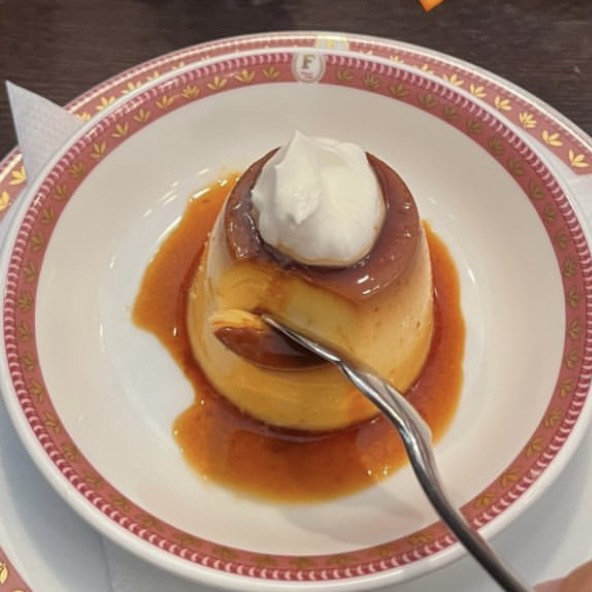
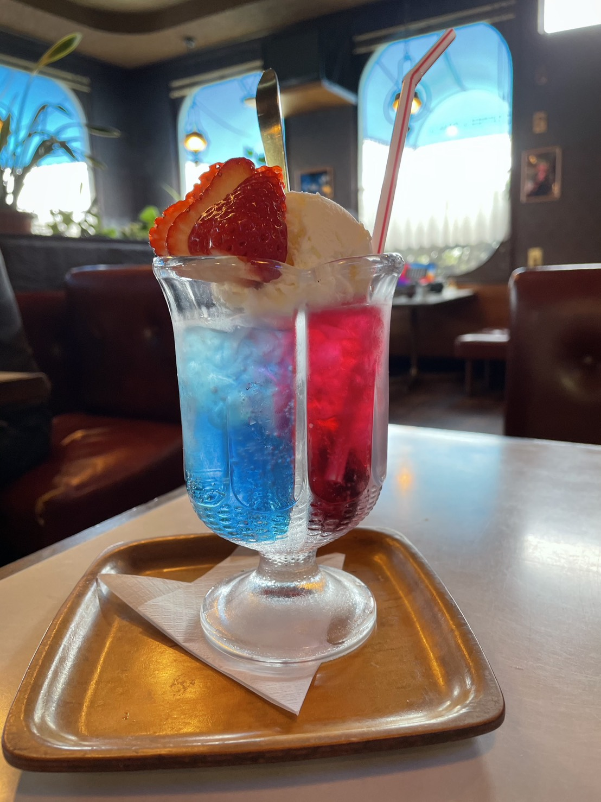

今日は中区にある「フルフル」さんに行ってきました！地元で大人気の老舗喫茶店です。
少しかためのプリンの甘さに癒されながら、ゆったりとした時間を過ごせてリフレッシュできました！
たまにはお気に入りのものを食べながら作業する時間もいいなと感じた一日でした。
2. 【日記】ドライブがてら行きたい！安佐北区の喫茶「樹里」
投稿日：2026年7月05日

ちょっと足を伸ばして、安佐北区の亀山にある「樹里」さんまでドライブがてら行ってきました！国道191号線沿いにある、素敵なレトロの建物が目印の老舗純喫茶です。
一歩足を踏み入れると、高い天井と木の温もりが心地よくて、一瞬で日常を忘れられる落ち着いた空間が広がっています。今回は赤と青の２層が美しい特注グラスのクリームソーダ「デュエット」を注文しました。上のフルーツは季節によって変わるそうです！
どこか懐かしい喫茶店メニューが豊富で、お腹も心も大満足です。騒がしい日常から離れて、のんびりとした時間を過ごしたいときに最高の隠れ家カフェですよ！